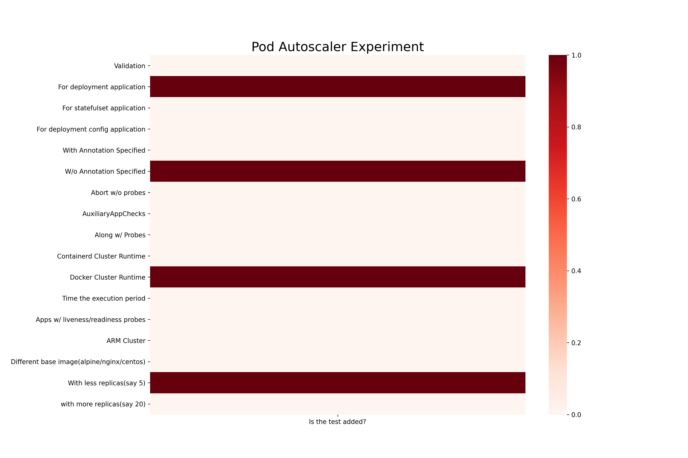
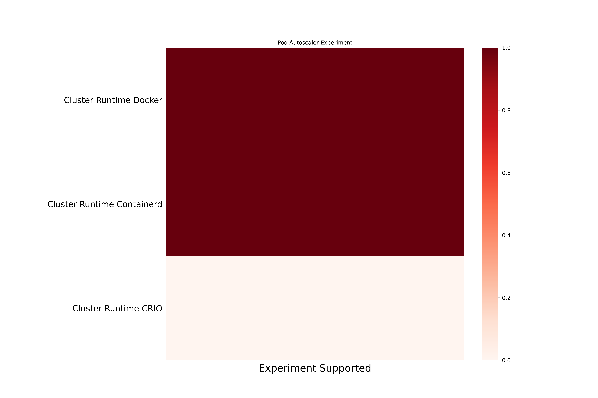
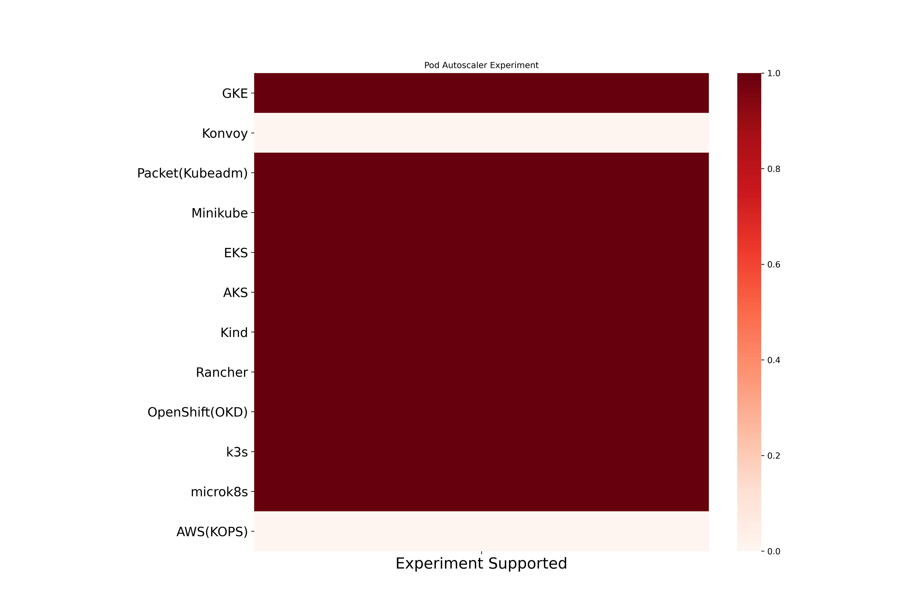

Pod Autoscaler Chaos
Pod Autoscaler scale the application replicas and test the node autoscaling on cluster. Here are the different coverage metrics for the experiment.
Pod Autoscaler experiment based coverage

Pod Autoscaler cluster runtime based coverage

Pod Autoscaler platform based coverage
